Histoire et éducation à la citoyenneté
10 / 12 réalité sociales
L'industrialisation : une révolution économique et sociale
XVIIIe et XIXe siècles · La transformation économique et sociale
- capitalisme
- classes sociales
- législation
- libéralisme
- mode de production
- révolution
- socialisme
- syndicalisme
- urbanisation

Mise en contexte
Au 18e siècle, un peu avant qu'elle ne s'industrialise, l'Angleterre est un véritable empire. Avec des colonies partout sur le globe, les bourgeois anglais accumulent des richesses colossales et désirent faire encore plus de profit. C'est dans ce contexte que plusieurs éléments s'alignent pour que l'Angleterre commence son industrialisation. C'est le début de ce que plusieurs historiens appellent la révolution industrielle.
Source : Alloprof
L'Angleterre est le premier pays où s'effectue la transformation d'une économie agricole en une économie industrielle. Cette transformation de l'agriculture est permise, notamment, grâce à la mécanisation des outils agricoles. Cette révolution économique, amorcée au milieu du 18e siècle, modifie la société en profondeur : de nouveaux groupes sociaux émergent et bouleversent la hiérarchie traditionnelle. L'étude de ce phénomène qui touche la société britannique permet de comprendre une réalité qui atteindra plusieurs pays d'Europe et d'Amérique du Nord au milieu du 19e siècle.
Concepts à l'étude
- Capitalisme : régime économique et social qui met de l'avant la propriété privée des moyens de production. Une grande importance est accordée à la recherche de profit ainsi qu'à ceux et celles qui détiennent le capital.
- Classes sociales : les grands groupes qui composent une société et qui se distinguent par leur richesse, leur travail et leur influence.
- Législation : l'ensemble des lois qu'un État se donne, ici pour encadrer le travail dans les usines et dans les mines.
- Libéralisme : courant de pensée qui défend la liberté d'entreprise, la propriété privée et la non-intervention de l'État dans l'économie.
- Mode de production : processus de fabrication des biens.
- Révolution : un changement profond et rapide de l'organisation d'une société.
- Socialisme : idéologie qui propose la propriété collective des moyens de production. Dans un régime socialiste, l'État est propriétaire des usines, des manufactures, des grandes surfaces agricoles de même que des moyens de communication. Le socialisme s'oppose au capitalisme.
- Syndicalisme : regroupement de personnes exerçant une même profession en vue de la défense de leurs intérêts.
- Urbanisation : le développement rapide des villes et de leur population.
Deux autres mots reviennent sans cesse dans les pages qui suivent. Le capital est la somme d'argent investie dans une entreprise industrielle ou commerciale. La consommation est l'utilisation des biens ou des services pour répondre à un besoin ou à un désir.
Situer dans l'espace
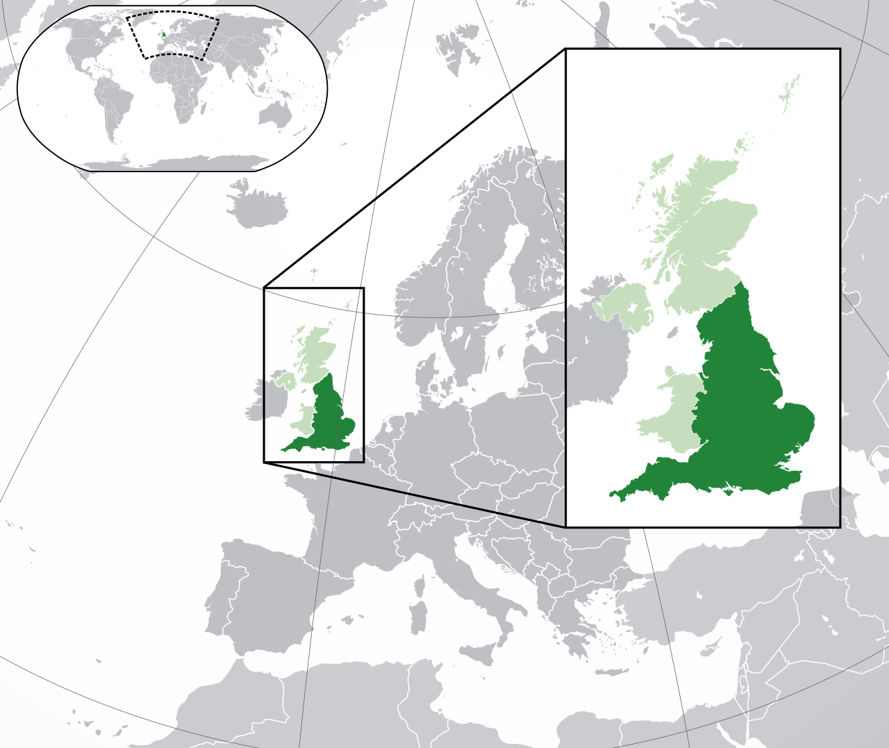
Source
Blank map of Europe (with disputed regions).svg : maix derivative work Alphathon /'æɫfə.θɒn/, England in the UK and Europe, Wikimedia Commons. Licence : Creative Commons BY-SA 3.0.L'Angleterre est un pays d'Europe de l'Ouest, séparé du continent par la Manche. L'Écosse se trouve au nord de l'Angleterre, le pays de Galles et l'Irlande sont, pour leur part, à l'ouest. Le centre et le sud de l'Angleterre sont principalement constitués de basses collines et de plaines, tandis que le nord et l'ouest sont principalement constitués de hautes terres montagneuses.
Les principales villes, en importance, sont Londres avec 550 000 habitants, Birmingham avec 84 700 habitants, Liverpool avec 80 000 habitants et Manchester avec 70 000 habitants. Londres reste le centre administratif et la capitale du pays, alors que Birmingham, Liverpool et Manchester deviennent des pôles industriels très importants.
Situer dans le temps
L'industrialisation de l'Angleterre a commencé dans la seconde moitié du 18e siècle. C'est à ce moment que les innovations technologiques ont permis un changement dans la production industrielle, en faisant passer d'un mode de production artisanal à une production industrielle. Cette révolution industrielle a entraîné une transformation économique majeure, avec une croissance rapide de l'industrie textile, une augmentation de la production de biens manufacturés et une concentration de la population dans les villes pour travailler dans les usines.
Ailleurs dans le monde
L'industrialisation débute en Grande-Bretagne vers 1750-1780, portée par la mécanisation du domaine du textile et l'usage de la vapeur. Celle-ci repose sur l'exploitation des mines de charbon et la sidérurgie, ce qui permet au pays de dominer l'économie mondiale pendant plusieurs décennies.
Le mouvement atteint ensuite la France autour de 1830, où la transition s'effectue de manière plus progressive. L'économie française conserve une base agricole importante tout en développant ses réseaux ferroviaires et son industrie lourde. Vers 1840, les États-Unis amorcent leur propre transformation industrielle, accélérée après 1865 par la fin de la guerre de Sécession. L'abondance des ressources naturelles et le développement ferroviaire favorisent l'émergence d'une production de masse.
Parallèlement, vers 1850, l'unification économique de l'Allemagne stimule une croissance rapide. L'industrie allemande se concentre alors sur des secteurs de pointe comme la chimie et la production d'électricité. Enfin, le Canada entame sa phase d'industrialisation majeure vers 1850-1879, marquée par la Politique nationale de 1879 qui impose des tarifs douaniers pour protéger l'économie canadienne. Le développement du pays s'appuie sur la construction du chemin de fer transcontinental et l'exploitation des matières premières.
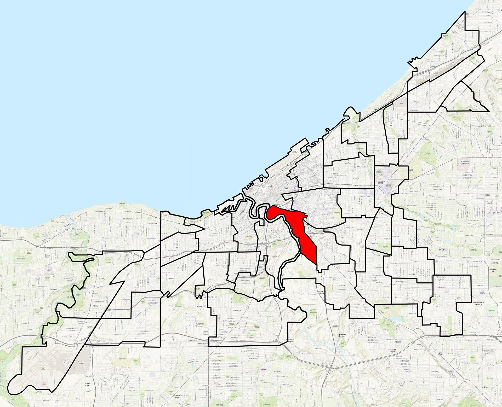
Source
Tim1965, Industrial Valley - Cleveland, Wikimedia Commons. Licence : Creative Commons BY-SA 4.0.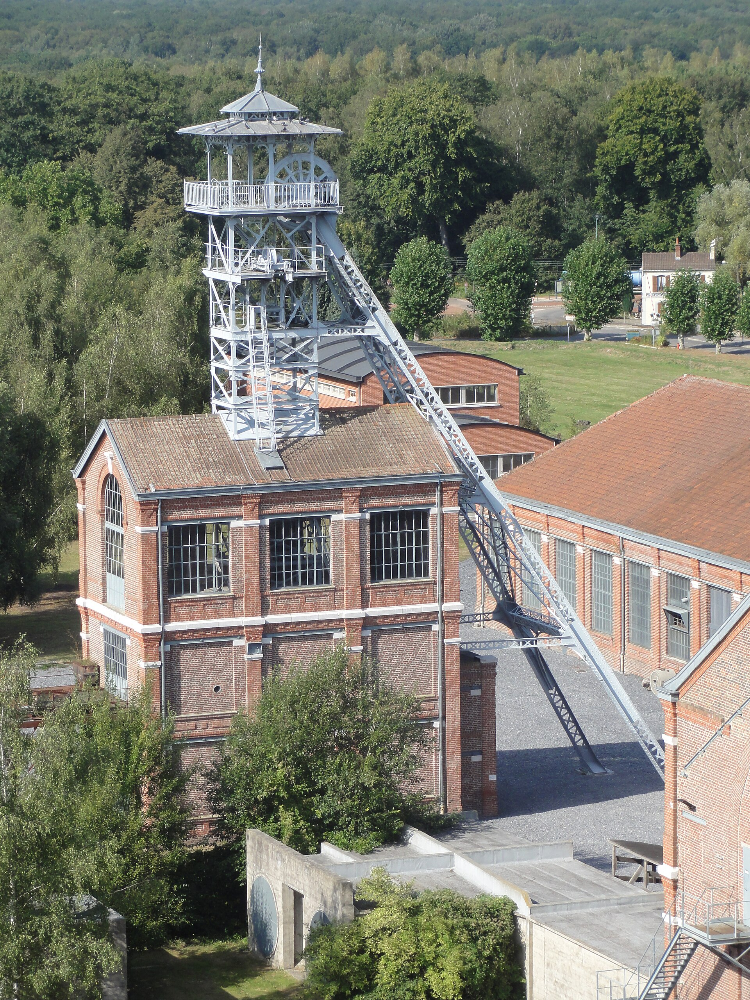
Source
Jérémy-Günther-Heinz Jähnick, Wallers - Fosse Arenberg des mines d'Anzin (395), Wikimedia Commons. Licence : Creative Commons BY-SA 3.0.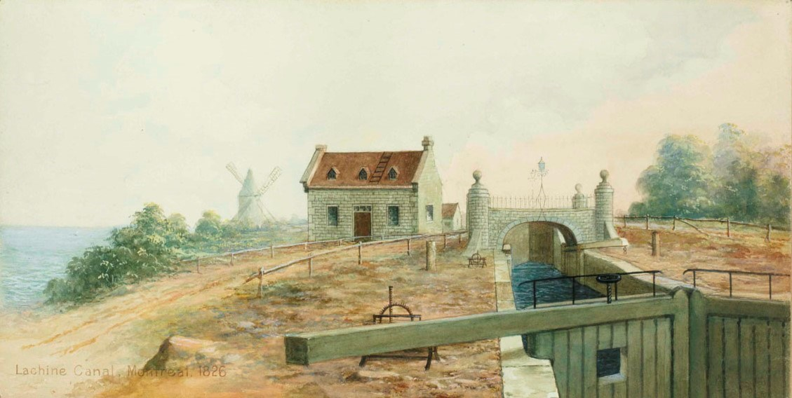
Source
John Hugh Ross, Lachine Canal, Montreal, 1826, Wikimedia Commons. Licence : Domaine public.Les causes de l'industrialisation en Angleterre
De nouvelles inventions
La machine à vapeur a été perfectionnée par James Watt au 18e siècle, en 1769. Il a amélioré le moteur à vapeur inventé par Thomas Newcomen en 1712, en utilisant un système de condensation séparé pour augmenter l'efficacité de la machine. L'utilisation première de la machine à vapeur de James Watt était la propulsion des bateaux à vapeur et le pompage de l'eau des mines de charbon. Cela a permis de réduire les coûts de production et d'augmenter la productivité dans les mines, stimulant ainsi la croissance économique. Cette utilisation a ensuite été étendue à d'autres secteurs industriels, comme les usines textiles et les chemins de fer.
L'invention de la mule-jenny
La mule-jenny est un métier à filer inventé par Samuel Crompton en 1779, qui a permis de produire des fils de coton de qualité supérieure à moindre coût. Cette invention a joué un rôle clé dans le développement de l'industrie textile en Angleterre. Elle utilise un chariot mobile qui étire la fibre avant de la tordre, ce qui permet de filer des fibres plus longues et plus fines, contrairement au travail fait à la main qui produit un fil plus grossier.
La mule-jenny a également permis de réduire les coûts de production en augmentant la vitesse de filage et en réduisant la main-d'oeuvre nécessaire. Cela a conduit à une augmentation de la production de fils de coton, stimulant ainsi la croissance de l'industrie textile anglaise, qui dépasse progressivement la productivité des filatures de coton de l'Inde.
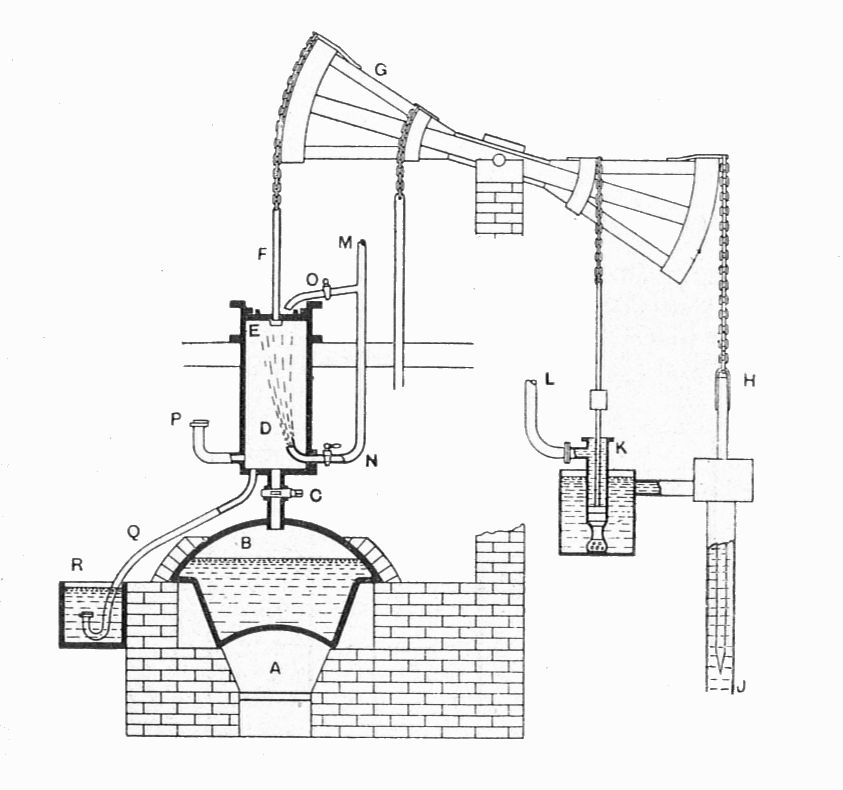
Source
Andy Dingley (scanner), Newcomen atmospheric engine (Heat Engines, 1913), Wikimedia Commons. Licence : Domaine public.Source
Henry Howard, James Watt by Henry Howard, Wikimedia Commons. Licence : Domaine public.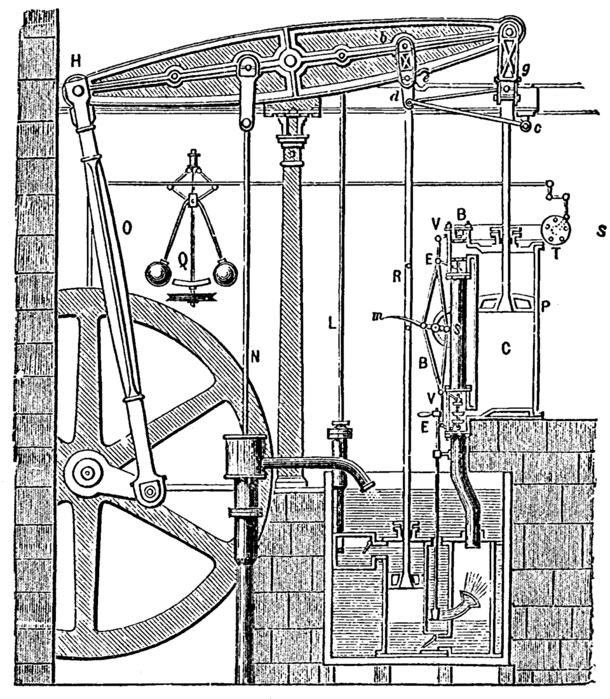
Source
Robert Henry Thurston (1839–1903), SteamEngine Boulton&Watt 1784, Wikimedia Commons. Licence : Domaine public.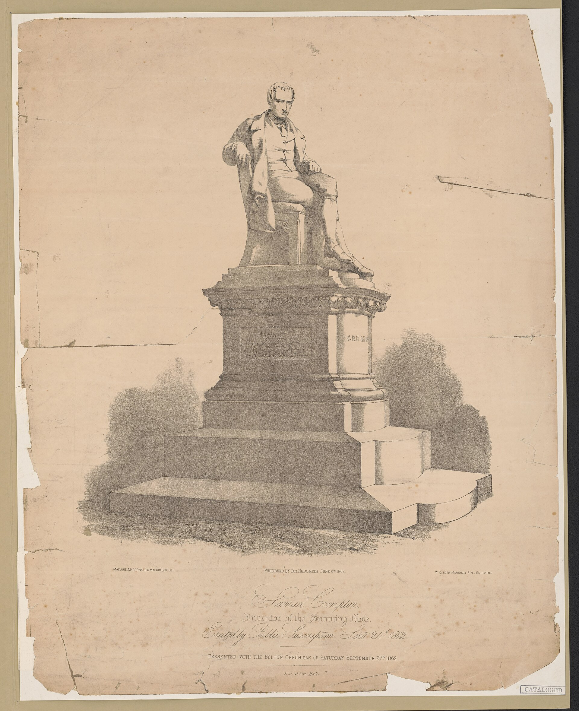
Source
Maclure, MacDonald, MacGregor, lithographer; Marshall, William Calder, 1813-1894, sculptor, Samuel Crompton, inventor of the spinning mule LCCN2005696488, Wikimedia Commons. Licence : Domaine public.
Source
Baines, Baines 1835-Mule Jenny, Wikimedia Commons. Licence : Domaine public.L'abondance du charbon
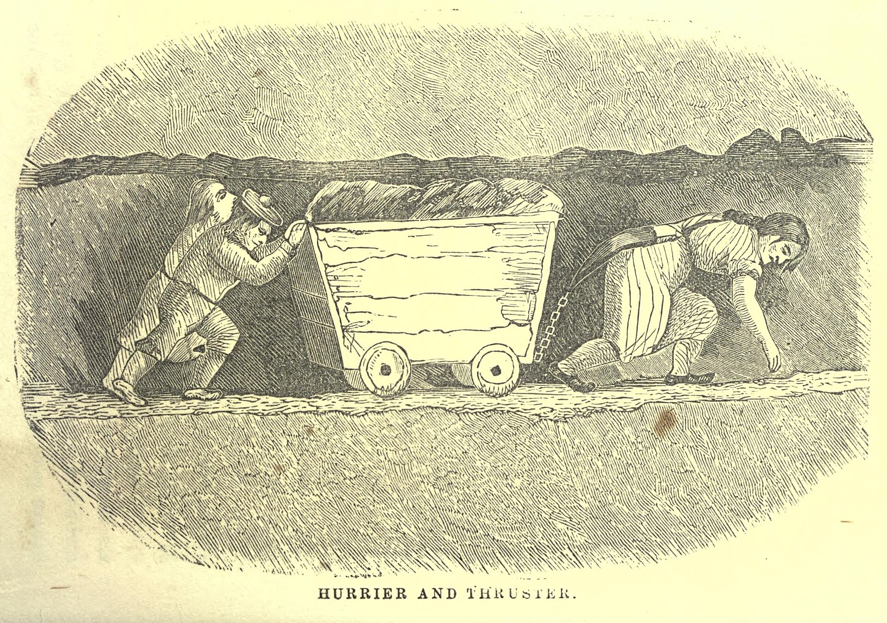
Source
John C. Cobden, Hurrier Cobden 1853 (v2), Wikimedia Commons. Licence : Domaine public.L'Angleterre possède de nombreux gisements de charbon, ressource naturelle nécessaire au fonctionnement des nouvelles inventions de Thomas Newcomen et de James Watt. Les bassins houillers y sont nombreux. La houille est une catégorie de charbon qui sert de combustible. La machine à vapeur de James Watt permet de pomper 500 litres à la minute et de descendre à 40 mètres sous terre. En 1750, une centaine d'entre elles équipent déjà les mines de charbon d'Angleterre, ce qui permet de creuser plus profond et d'augmenter la production à une vitesse très rapide. Le charbon était transporté vers la surface à l'aide de chariots tirés par des chevaux ou par des hommes.
Les conditions de travail étaient extrêmement dangereuses, avec des risques d'effondrements, d'inondations et d'explosions. Les enfants étaient souvent employés pour ramasser les éclats de charbon, transporter les chariots ou nettoyer les tunnels. Les femmes étaient également employées pour laver le charbon, coudre les vêtements des mineurs et préparer les repas. Les enfants et les femmes étaient souvent payés moins que les hommes, tout en étant soumis aux mêmes risques de blessures et de maladies.
L'évolution du transport

Source
Auteur inconnu, Stephenson's Rocket drawing, Wikimedia Commons. Licence : Domaine public.Au début du 19e siècle, la locomotive à vapeur et les chemins de fer se développent rapidement en Angleterre, mais il faudra quelques années avant que le rail remplace les canaux comme principal moyen de transport. L'invention de George Stephenson est modernisée entre 1817 et 1825, et atteint alors 30 km/h.
Voici l'évolution des voies ferrées en Angleterre :
- 1840 : 1 349 km;
- 1860 : 17 000 km;
- 1880 : 30 000 km.
Grâce à son amélioration progressive, le train atteint 60 à 75 km/h à la fin du 19e siècle et peut transporter jusqu'à 2 000 tonnes de marchandises. Les premiers bateaux à vapeur sont construits au début du 19e siècle, en même temps que la locomotive. Rapidement, ceux-ci deviennent de 2 à 3 fois plus rapides que les bateaux à voile et peuvent transporter plus de marchandises.
Le bateau à vapeur et la locomotive ont une vitesse régulière et permettent de transporter de lourdes charges, comme le charbon. Puisque le bateau est le principal moyen de transport au début du 19e siècle, l'Angleterre développe un important réseau de canaux de 7 000 kilomètres en 1830, qui permet le déplacement des barges.
Source : Service national du RÉCIT, domaine de l'univers social
D'une cause à l'autre
Les lois de l'enclosure de 1727
Les lois sur les enclosures de 1727 sont des lois britanniques qui ont permis aux propriétaires terriens de clôturer les terres communales pour les utiliser à leurs propres fins. Ces lois ont entraîné une augmentation de la productivité agricole, mais elles ont aussi eu des conséquences sociales négatives pour les travailleurs agricoles, qui ont perdu leur accès aux terres communales pour subvenir à leurs besoins.
Les lois sur les enclosures ont contribué à l'exode rural en réduisant les occasions, pour les travailleurs agricoles, de subvenir à leurs besoins sur les terres communales. Les travailleurs qui ont perdu leur accès aux terres ont été obligés de quitter les zones rurales à la recherche de nouveaux moyens de subsistance. Cela a entraîné un exode massif vers les villes pour travailler dans les industries naissantes, ce qui a contribué à la formation des quartiers ouvriers.
L'amélioration de la production agricole
Les lois de l'enclosure ont concentré les terres agricoles entre les mains de grands propriétaires terriens. Ceux-ci peuvent mettre en place des pratiques agricoles modernes afin d'augmenter la productivité des terres :
- la rotation des cultures;
- l'utilisation de machinerie agricole, comme la semeuse mécanique et la batteuse. Les propriétaires réussissent ainsi à augmenter leur productivité et, par le fait même, à nourrir de plus en plus de citoyens britanniques. L'amélioration du secteur de l'agriculture favorise alors une augmentation de la natalité et une baisse de la mortalité.
L'exode rural et l'urbanisation
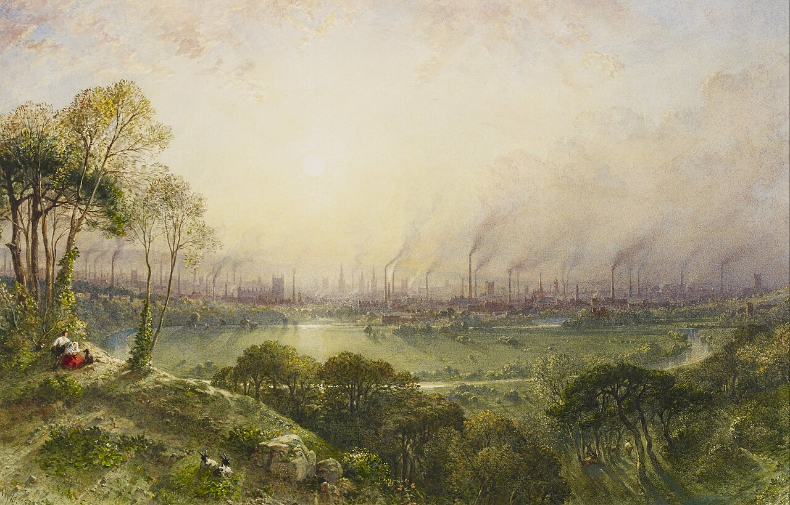
Source
Wyld, William (1806 - 1889) (English) Born in London. Died in Paris. Details on Google Art Project, Wyld, William - Manchester from Kersal Moor, with rustic figures and goats - Google Art Project, Wikimedia Commons. Licence : Domaine public.Pour Karl Marx, les enclosures privent beaucoup de petits paysans de leur moyen de subsistance, à savoir la culture des terres communes, et contraignent les paysans à un exode rural massif. L'exode rural correspond à un départ de la campagne vers la ville. Ces paysans sans terre migrent ainsi vers les villes et leurs faubourgs, dans lesquels ils deviennent les premiers ouvriers de la révolution industrielle. C'est une des raisons qui expliquent qu'en Angleterre la population s'est urbanisée plus tôt qu'en France.
L'exode rural qui se produit en Angleterre aux 18e et 19e siècles accélère l'urbanisation. En effet, les villes se développent rapidement en raison de l'arrivée massive de travailleurs, ce qui amène la création rapide de quartiers. L'urbanisation correspond donc au développement rapide des villes et de leur population.
De la production artisanale à la production industrielle
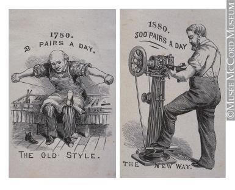
Source
John Henry Walker, L'ancienne façon et La nouvelle façon (1880), Musée McCord M930.50.5.142 et M930.50.5.262, Service national du RÉCIT, univers social. Licence : Creative Commons BY-NC-ND.Avant l'industrialisation, les biens sont produits par l'artisan et, parfois, par son apprenti. L'apprentissage est long, mais l'apprenti sera en mesure de produire un bien de qualité à la fin de sa formation. Il se spécialise donc dans un domaine en particulier. L'artisan participe à toutes les étapes de la confection d'un bien. Puisqu'il réalise seul la production, celle-ci est longue et coûteuse.
Avec l'industrialisation, les ouvriers n'ont pas besoin de se spécialiser. Les tâches qu'ils effectuent sont simples et répétitives, et elles ne nécessitent aucune formation particulière. En répétant la même tâche toute la journée, les nombreux ouvriers d'une usine sont capables de produire énormément de biens, et ce, à faible coût. L'ouvrier est cependant facilement remplaçable, ce qui fait qu'il est faiblement payé et doit accepter un très bas salaire. Les deux gravures de John Henry Walker mettent ce basculement en chiffres : à l'ancienne façon, en 1780, l'atelier sort deux paires par jour; à la nouvelle, en 1880, il en sort trois cents.
Source : Service national du RÉCIT, domaine de l'univers social
Les secteurs industriels
Lors de la première phase d'industrialisation, l'industrie du textile se développe rapidement afin de concurrencer de grandes régions productrices comme le Bengale. Le coton filé et tissé à la machine coûte moins cher que le coton travaillé à la main, et il s'exporte dans tout l'empire. La métallurgie se développe tout aussi rapidement. En effet, le développement des villes ainsi que la construction des chemins de fer contribuent à augmenter la demande de fer, de fonte et d'acier. Coalbrookdale, où le premier haut fourneau au coke a été mis en service, devient le symbole de cette transformation.
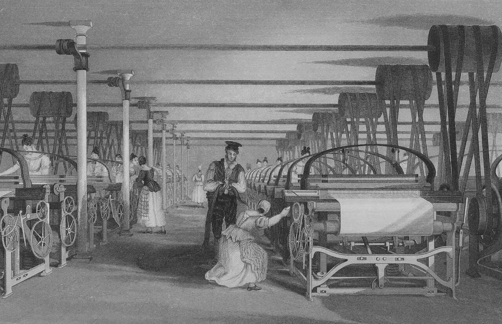
Source
Illustrator T. Allom, Engraver J. Tingle, Powerloom weaving in 1835, Wikimedia Commons. Licence : Domaine public.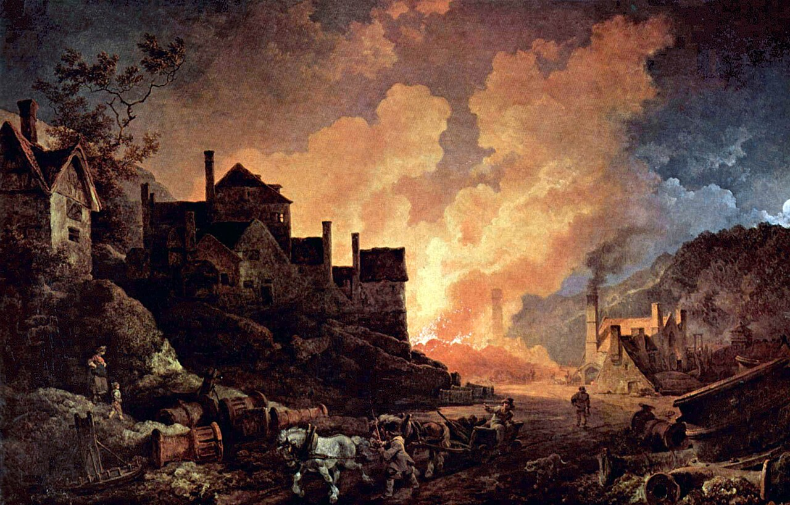
Source
Philip James de Loutherbourg, Philipp Jakob Loutherbourg d. J. 002, Wikimedia Commons. Licence : Domaine public.Les classes sociales
La classe ouvrière
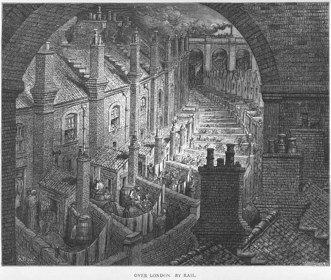
Source
Gustave Doré, Dore London, Wikimedia Commons. Licence : Domaine public.La classe ouvrière se développe en Angleterre avec l'arrivée massive des paysans en ville, à la suite de l'exode rural créé par les lois de l'enclosure. Ils arrivent en ville et se cherchent un travail afin de subvenir à leurs besoins de base. Ils le trouvent dans les usines.
Les conditions de travail sont imposées par le rythme des machines, qui fonctionnent en continu mais exigent une présence constante des ouvriers. Ces derniers n'ont besoin ni d'être spécialisés ni d'être forts. La machine a été conçue pour produire le mieux possible les objets souhaités, et elle est actionnée grâce à l'énergie fournie par une machine à vapeur. Cela permet l'embauche de femmes et d'enfants en grand nombre, surtout dans l'industrie textile, qui est très mécanisée.
Les journées de travail comptent 12 à 14 heures, et ce, 7 jours sur 7, dès l'âge de 10 ans. On emploie même des enfants de 5 ans dans les mines et les filatures. Les salaires sont calculés afin de ne couvrir que les besoins de base des ouvriers. Jusque dans les années 1880, il n'y a aucune protection sociale : ni assurance maladie, ni assurance chômage, ni assurance accident, ni régime de retraite. L'ouvrier qui ne travaille pas n'a aucun revenu.
Une journée d'enfant ouvrier, d'après les témoignages de 1832
Choisis un moment
Sources
- Rapport du comité Sadler, Parliamentary Papers 1831-1832, vol. XV. Extraits d'Elizabeth Bentley et de Matthew Crabtree : Laura Del Col, The Victorian Web.
- Santé d'Elizabeth Bentley et date de son témoignage : Spartacus Educational. Métier de Matthew Crabtree : Spartacus Educational.
- Témoignage de Samuel Coulson : The Peel Web.
- Le comité, ses témoins et la commission de 1833 : Wikipédia, Sadler report et Factory Act 1833.
- Texte de la loi de 1833 : Education in the UK. Résumé : The National Archives.
- Les traductions des témoignages sont de Monsieur Univers social.
Les quartiers ouvriers
Prenons l'exemple de la ville de Manchester. Entre 1801 et 1831, sa population est passée de 90 000 à 237 000 habitants. Dans les quartiers ouvriers de cette ville, l'espérance de vie était de 28 ans et plus de la moitié des enfants mouraient avant d'atteindre l'âge de 5 ans. L'insalubrité et les problèmes d'accès à du lait de qualité expliquent notamment cette forte mortalité infantile. Un homme de quarante ans était considéré comme un vieillard.
Les ouvriers sont logés dans des conditions inhumaines, souvent dans des quartiers appartenant aux propriétaires de l'usine. Ces quartiers se situent trop souvent près des usines, dans un environnement pollué par les émanations de charbon et les déversements de produits toxiques dans les eaux. Ils ne possèdent que rarement les commodités que sont l'eau courante, le ramassage des déchets et un système d'aqueduc. Les ouvriers vivent donc dans un environnement qui n'est pas sain et qui contribue à augmenter la mortalité ouvrière.
La bourgeoisie industrielle
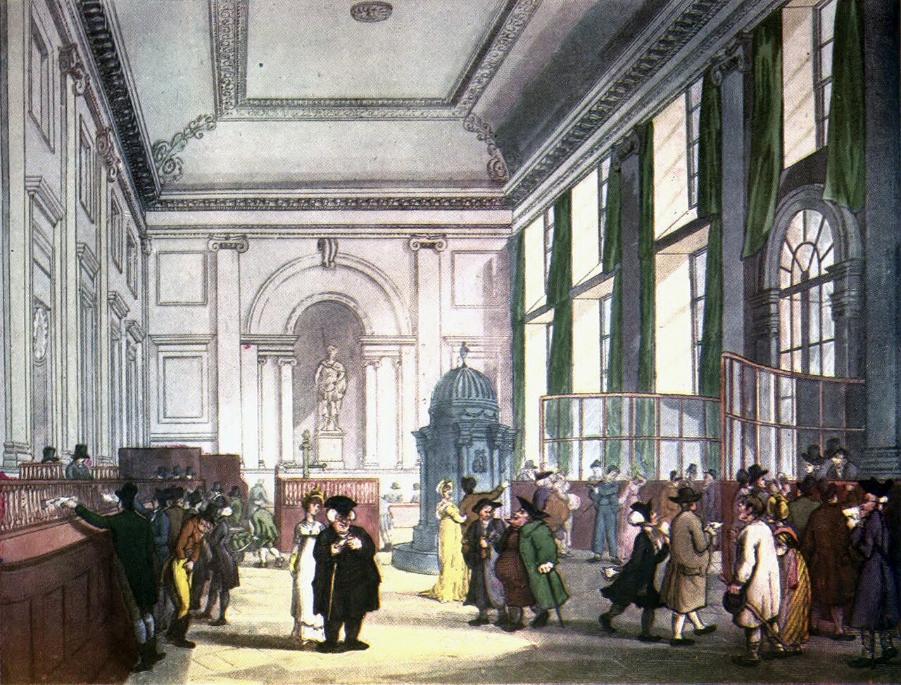
Source
Thomas Rowlandson (1756–1827) and Augustus Charles Pugin (1762–1832) (after) John Bluck (fl. 1791–1819), Joseph Constantine Stadler (fl. 1780–1812), Thomas Sutherland (1785–1838), J. Hill, and Harraden (aquatint engravers) [1], Microcosm of London Plate 007 - Bank of England (colour), Wikimedia Commons. Licence : Domaine public.Lors de l'industrialisation, une classe sociale émerge : il s'agit de la bourgeoisie. Celle-ci possède les moyens de production, c'est-à-dire les usines, les ressources naturelles et le capital. Il ne lui manque qu'une main-d'oeuvre nombreuse pour travailler dans les usines. La bourgeoisie industrielle remplace progressivement la noblesse britannique sur les plans économique et politique. Elle représente l'élite de la société, et le nombre de députés issus de cette classe sociale est en constante augmentation au parlement de Londres.
Les bourgeois ont souvent des domestiques qui s'occupent de l'entretien de la maison, et il est rare de voir une femme de cette classe sociale travailler. La plupart du temps, elles s'occupent d'associations caritatives. La bourgeoisie industrielle n'occupe pas les mêmes quartiers que les ouvriers. Ses conditions d'existence sont très confortables : les quartiers sont verdoyants, les demeures sont grandes et l'air est sain grâce aux nombreux parcs.
L'accès au capital
C'est vers 1750 qu'on voit l'apparition des premières banques en Angleterre. Elles sont créées afin de favoriser la circulation des capitaux, c'est-à-dire de l'argent. Ainsi, il devient possible d'emprunter d'importantes sommes d'argent à crédit pour le développement industriel. La disponibilité des capitaux permet aux propriétaires d'industries d'investir dans leur commerce, d'augmenter leur production et de faire encore plus de profits. Les gens qui sont propriétaires des industries et qui en tirent des profits forment la classe sociale qu'on appelle la bourgeoisie.
Le libéralisme économique
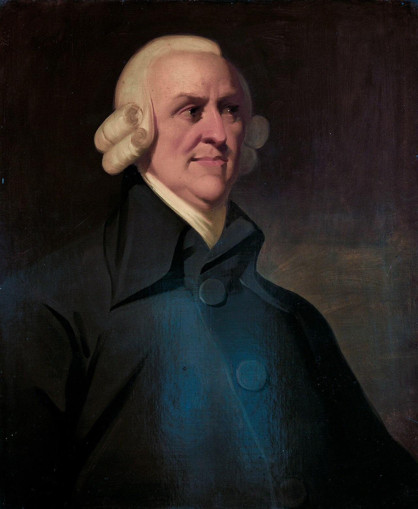
Source
Unknown author Unknown author, Adam Smith The Muir portrait, Wikimedia Commons. Licence : Domaine public.Au 18e siècle, l'économiste et philosophe Adam Smith propose un nouveau courant de pensée, fondé sur le droit de propriété de John Locke. Ce courant de pensée est le libéralisme économique. Celui-ci se base sur le droit de posséder des biens, sur les libertés individuelles et sur la liberté d'entreprise. L'entreprise et l'entrepreneur du même coup, doit être libre d'agir selon sa volonté, puisqu'elle est créatrice de richesse. Ses principes tiennent en trois idées :
- L'État ne doit pas intervenir dans l'économie.
- Un entrepreneur doit être libre de mener son entreprise comme il le souhaite, puisqu'il crée de la richesse pour son pays.
- Les entreprises doivent être libres de se concurrencer, ce qui les encourage à offrir le meilleur prix selon l'offre et la demande. Cela oblige aussi les entreprises à investir leur capital afin d'être plus efficaces que leurs compétiteurs.
Le capitalisme en six étapes
Une réponse au capitalisme : le socialisme
Source
John Jabez Edwin Mayall, Karl Marx 001, Wikimedia Commons. Licence : Domaine public.Le mot socialisme entre dans le langage courant à partir des années 1820, dans le contexte de la révolution industrielle et de l'urbanisation qui l'accompagne. Il désigne alors un ensemble de revendications et d'idées visant à améliorer le sort des ouvriers, et plus largement de la population, par le remplacement du capitalisme par une société supposée plus juste. L'idée socialiste est de répartir la richesse de manière égale entre tous.
La naissance du syndicalisme
Fuyant la famine, les immigrés irlandais erraient par milliers dans les ruelles des quartiers misérables. Ceux qui ne trouvaient pas de travail mouraient souvent de froid et de faim. Les employeurs en profitaient pour attiser la concurrence entre ouvriers. Ils faisaient travailler des enfants dans le même but. Ils pouvaient légalement embaucher un enfant de 6 ans et l'exploiter sans limites, jour et nuit, jusqu'à ce qu'il tombe d'épuisement. Les enfants travaillaient dans les mines et dans les usines. Ils grimpaient dans les cheminées pour les désengorger, où ils mouraient par milliers, brûlés ou étouffés.
Les ouvriers se regroupent ainsi à l'intérieur d'organisations syndicales, appelées à l'époque trade unions. Néanmoins, les syndicats sont illégaux jusqu'à la seconde moitié du 19e siècle. En Angleterre, le gouvernement conservateur de Benjamin Disraeli reconnaît aux syndicats un statut légal en 1871. Trois ans plus tard, en 1874, le Trade Unions Congress, avec ses 1 200 000 membres, obtient le droit d'utiliser légalement la grève lors des négociations avec le patron de l'usine.
Syndicalisme Mouvement ayant pour objectif de grouper des personnes exerçant une même profession en vue de la défense de leurs intérêts.
Syndicat Association qui a pour objectif de défendre les intérêts économiques ou professionnels d'un groupe de membres.
Ainsi, nous pouvons comprendre que seul, l'ouvrier est faible. Il s'est donc associé avec plusieurs autres ouvriers afin d'avoir un poids suffisant face aux patrons. Le mouvement syndical a été créé par des gens qui ont uni leurs voix pour exiger des salaires équitables, des lieux de travail sûrs et des heures de travail raisonnables.
Libéralisme, socialisme, syndicalisme : qui dit quoi?
Classe chaque énoncé
À quelle doctrine appartient cet énoncé?
Sources
- Adam Smith, La richesse des nations, 1776 : Online Library of Liberty et Wikipédia, Invisible hand.
- Nassau Senior, Letters on the Factory Act, 1837 : The Peel Web. Opposition des propriétaires d'usines : The National Archives.
- Karl Marx et Friedrich Engels, Manifeste du Parti communiste, 1848 : chapitre 1, chapitre 2 et chapitre 4.
- Robert Owen : Wikipédia. Ouvriers de Tolpuddle : Wikipédia.
- Amalgamated Society of Engineers : Wikipédia. Grève des allumettières de 1888 : Wikipédia.
- Friedrich Engels, A Fair Day's Wages for a Fair Day's Work, 1881 : Marxists Internet Archive.
- Les citations sont traduites par Monsieur Univers social. Les paraphrases résument fidèlement une position documentée.
Le gouvernement légifère
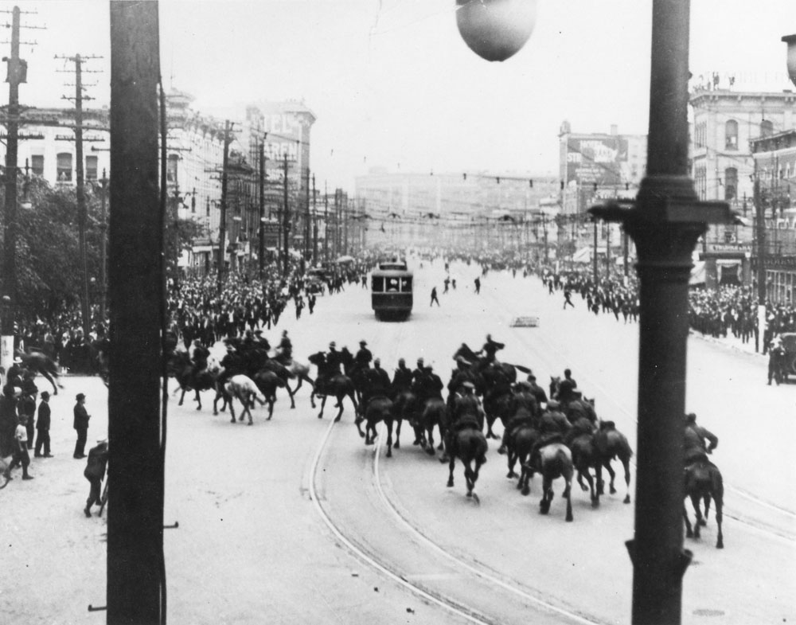
Source
Canadian government / Royal North West Mounted Police; declared to be in the Public Domain, http://collectionscanada.gc.ca/pam_archives/index.php?fuseaction=genitem.displayItem&lang=eng&rec_nbr=3615118, RNWMP operations in Winnipeg General Strike, 1919, Wikimedia Commons. Licence : Domaine public.En réaction aux grèves ouvrières, le gouvernement britannique met en place plusieurs lois qui permettent d'améliorer les conditions de travail des ouvriers. En voici quelques exemples :
- 1802 : loi qui interdit les journées de travail en usine de plus de 12 heures pour les enfants;
- 1819 : loi qui interdit aux enfants de moins de 9 ans de travailler dans les usines de coton;
- 1842 : loi qui interdit le travail des femmes et des enfants de moins de 10 ans dans les mines;
- 1871 : loi qui reconnaît légalement les syndicats;
- 1910 : établissement du salaire minimum.
La division du travail et le fordisme
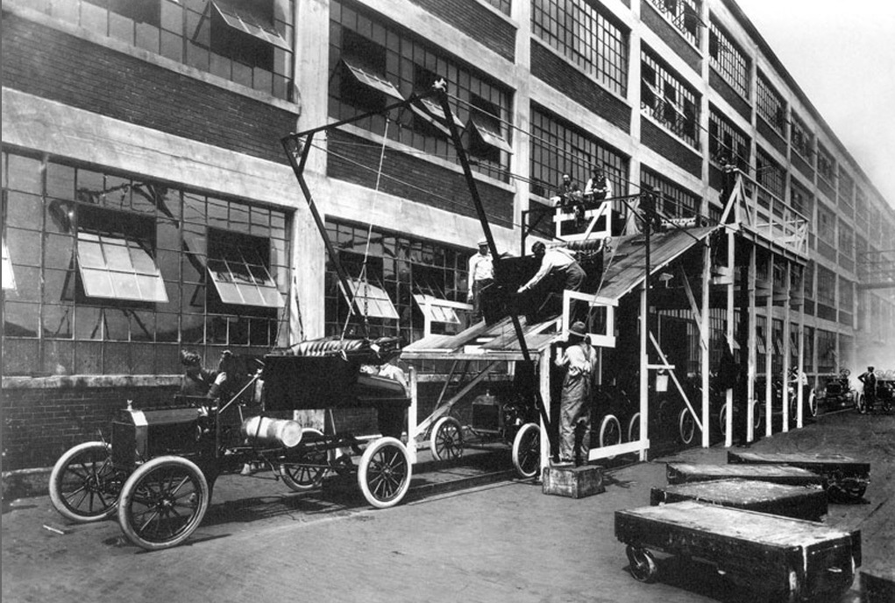
Source
Ford company, A-line1913, Wikimedia Commons. Licence : Domaine public.Cette dernière section va plus loin que le programme. Elle sert à comprendre ce que devient l'usine au 20e siècle, une fois la révolution industrielle bien installée. Adam Smith décrit la division du travail dans La richesse des nations. Il l'appuie sur l'exemple, devenu célèbre, de la manufacture d'épingles : si deux ouvriers travaillaient chacun de son côté, ils ne produiraient pas plus de vingt épingles par jour, alors qu'en se partageant les tâches ils peuvent en fabriquer des milliers dans le même temps. Plus la tâche est découpée, plus la production augmente.
Les usines Ford demandaient une main-d'oeuvre disciplinée, désireuse et capable d'effectuer des tâches répétitives sur la ligne d'assemblage. Les principes du taylorisme y étaient appliqués avec rigueur. Néanmoins, Ford innova. Ce qui était nouveau dans sa pensée, c'était sa vision des choses : il était persuadé qu'il fallait une production de masse destinée à une consommation de masse. Ainsi, le salaire de cinq dollars pour une journée de huit heures permit à la fois d'assurer un compromis avec la discipline requise pour travailler sur la ligne d'assemblage, mais aussi de fournir aux travailleurs un revenu et un temps libre suffisants pour qu'ils consomment les produits qu'ils avaient eux-mêmes fabriqués.
Sources
- Service national du RÉCIT en univers social
- Alloprof, L'industrialisation
- Musée McCord Stewart
- Wikipédia
- The Victorian Web, témoignages devant le comité Sadler, 1832
- Spartacus Educational, Elizabeth Bentley
- The Peel Web, témoignage de Samuel Coulson
- Wikipédia, Sadler report
- Education in the UK, texte de la loi sur les usines de 1833
- The National Archives, 1833 Factory Act
- UK Parliament, Early factory legislation
- Online Library of Liberty, Adam Smith
- Marxists Internet Archive, Manifeste du Parti communiste
- Marxists Internet Archive, Friedrich Engels, A Fair Day's Wages for a Fair Day's Work, 1881
- Wikipédia, Robert Owen
- Wikipédia, Tolpuddle Martyrs
- Wikipédia, London matchgirls strike of 1888